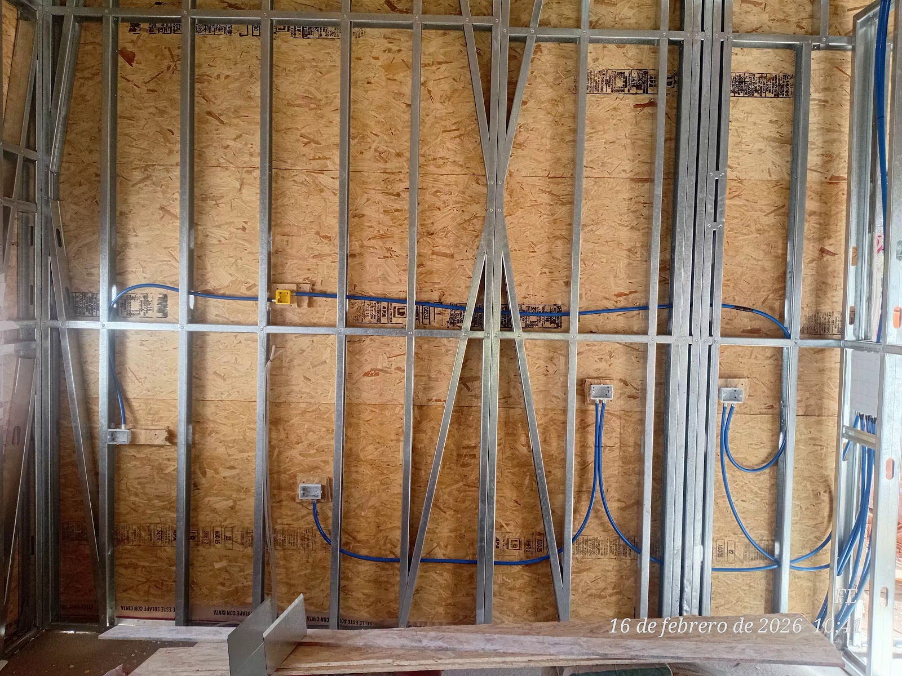
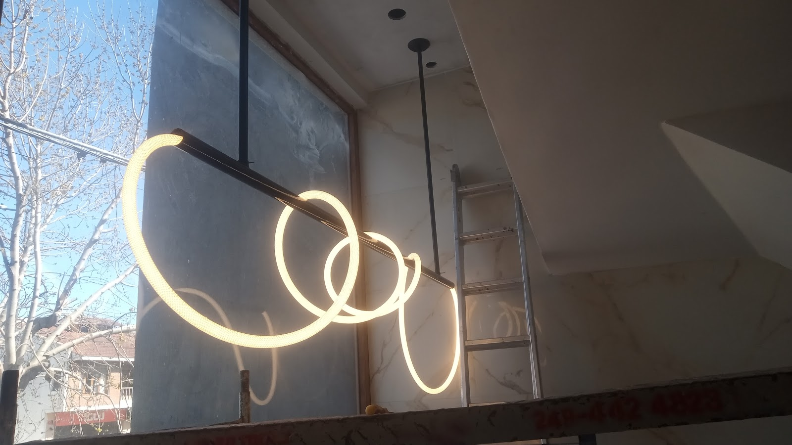

Urgencias eléctricas 24 hs
Atención para cortes, térmicas quemadas y situaciones que no pueden esperar al día siguiente.
Panel de urgencia · Tandil
Instalaciones y urgencias eléctricas en Chacabuco 1235, con rating 5 y 17 reseñas. Si se quema una térmica o te quedás sin luz, el primer paso es llamar.
Tablero de servicios
Atención para cortes, térmicas quemadas y situaciones que no pueden esperar al día siguiente.
Revisión y reemplazo de protecciones eléctricas cuando el problema aparece en el tablero.
Trabajo eléctrico en viviendas, locales y obras, con orden en cañerías, bocas y conexiones.
Armado, actualización y resolución de fallas visibles en el centro de la instalación.
Una urgencia real
“Lo llame a la 1 de la mañana porque se quemó la térmica de afuera, vinieron y lo arreglo en una hora.el trato muy respetuoso y cordial. Y lo que cobro acorde a lo que hizo y sobretodo por la hora.”
Lili Orellano
Instalaciones eléctricas en obra
La dirección visual sale de estas instalaciones reales: corrugados azules, ladrillo, perfilería y una lectura técnica de tablero nocturno.


Lectura de reseñas
Tres reseñas citadas literales, con autor.
“Lo llame a la 1 de la mañana porque se quemó la térmica de afuera, vinieron y lo arreglo en una hora.el trato muy respetuoso y cordial. Y lo que cobro acorde a lo que hizo y sobretodo por la hora.”
“Hizo trabajos en mi casa, muy buena persona para recomendar, gracias.”
“Un genio Darío, puntual, muy educado y muy prolijo, súper recomendado.”
Contacto directo
Decí si es una urgencia, si se quemó una térmica o si necesitás coordinar una instalación. La llamada es el canal más rápido.
0249 460-5301